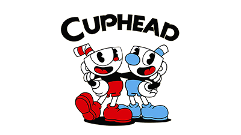
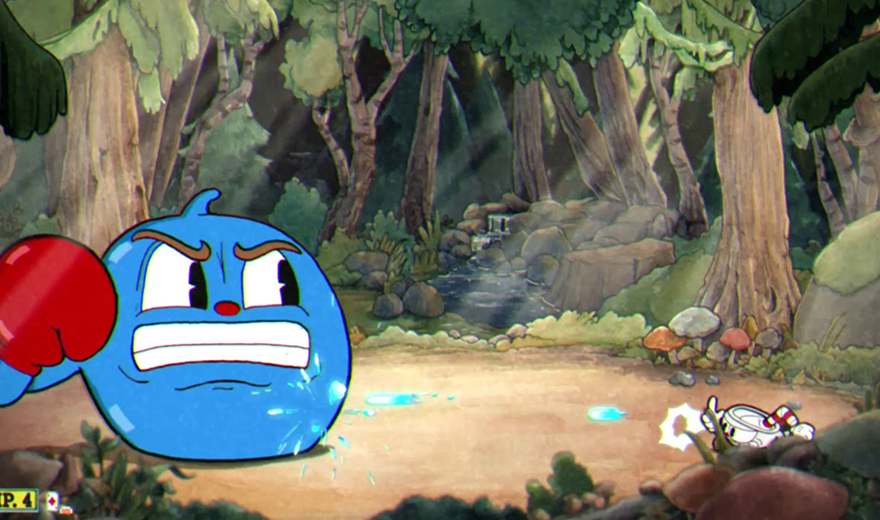
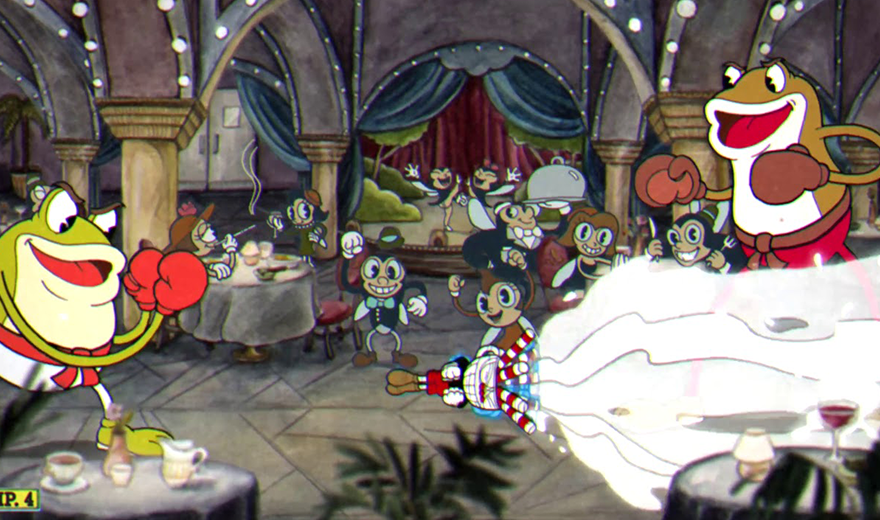
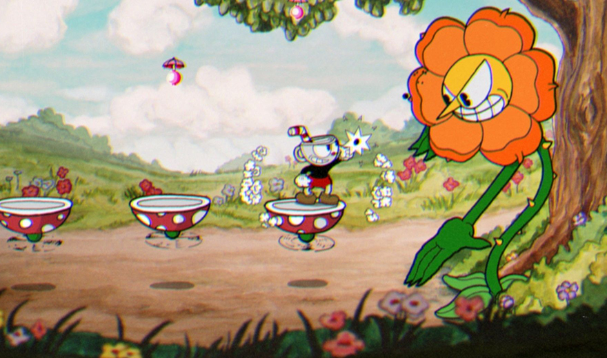

Cultura pop em HTML e CSS
Episódio de hoje:

O que é cuphead?
"Cuphead é um jogo eletrônico de run and gun e plataforma criado pelos irmãos canadenses Chad e Jared Moldenhauer através da Studio MDHR. O jogo foi inspirado no estilo de animação Rubber hose usado em desenhos animados da Era de Ouro da animação americana, como o trabalho dos estúdios Fleischer Studios, Warner Bros"
Minha opinião sobre cuphead
Sempre gostei muito de jogos e com cuphead não
seria diferente. A questão é que até o atual
momento esse foi um dos jogos mais difíceis
que eu já joguei na minha vida. Então, fiz esse
site para demonstrar minha humildade opinião
sobre algumas fases desse jogo.
Veja abaixo:
Pânico botânico - Máfia das Raízes

O primeiro chefe do jogo e por consequência o mais fácil.
Você tem que derrotar 3 raízes: Batata,
cebola e cenoura! Sinceramente se você
tentou mais de 5 vezes e não passou, nem dê
o próximo passo, pode
desinstalar e pedir
reembolso!
Meleca Melosa - Melecone
Esse nível te ensina basicamente como desviar e o
princípio de alguns padrões. Uma bola azul bem simpática
que quer te matar. Também é muito fácil, consegui
passar
de primeira usando o tiro perseguidor e
desviando.
Boate da bolacha - Escoaxo e Sopapo
Essa foi a primeira fase que eu realmente tive que
decorar o padrão dos vilões. Depois de algumas
tentativas consegui pegar o time certo dos desafios
finais e passar
dos sapos briguentos. A música ficou
na minha cabeça na hora de dormir, que fase.
Fúria floral - Cactnio Spinoza
Eu já tinha visto muito conteúdo sobre essa fase na internet e estava muito animado. Joguei com meu irmão e depois de algumas brigas e dor de cabeça passamos dessa girassol infeliz. Com certeza a fase que representa a primeira ilha! Ela tem um gingado muito bom!
Geni é o Zeppelin - Gênio Buarque

A primeira fase de avião é a mais difícil da primeira ilha. Além de decorar os padrões eu tinha que torcer para não aparecer o anjo(que tava mais pra diabo), porque na minha cabeça era impossível passar dele. Depois de 2 horas e meia de relógio finalmente consegui. Foi a única coisa que deixou meu domingo a noite menos triste
Trilha Sonora
Confira a criação da trilha sonora da fase fúria floral.
Obrigado pela sua atenção
Além de demonstrar minha experiência com o jogo, o objetivo desse site foi mostrar um pouco do que eu estou aprendendo no desenvolvimento de sites, respectivamente HTML e CSS. Espero que tenha gostado!

Santiago Oliveira
Me siga no instagram: